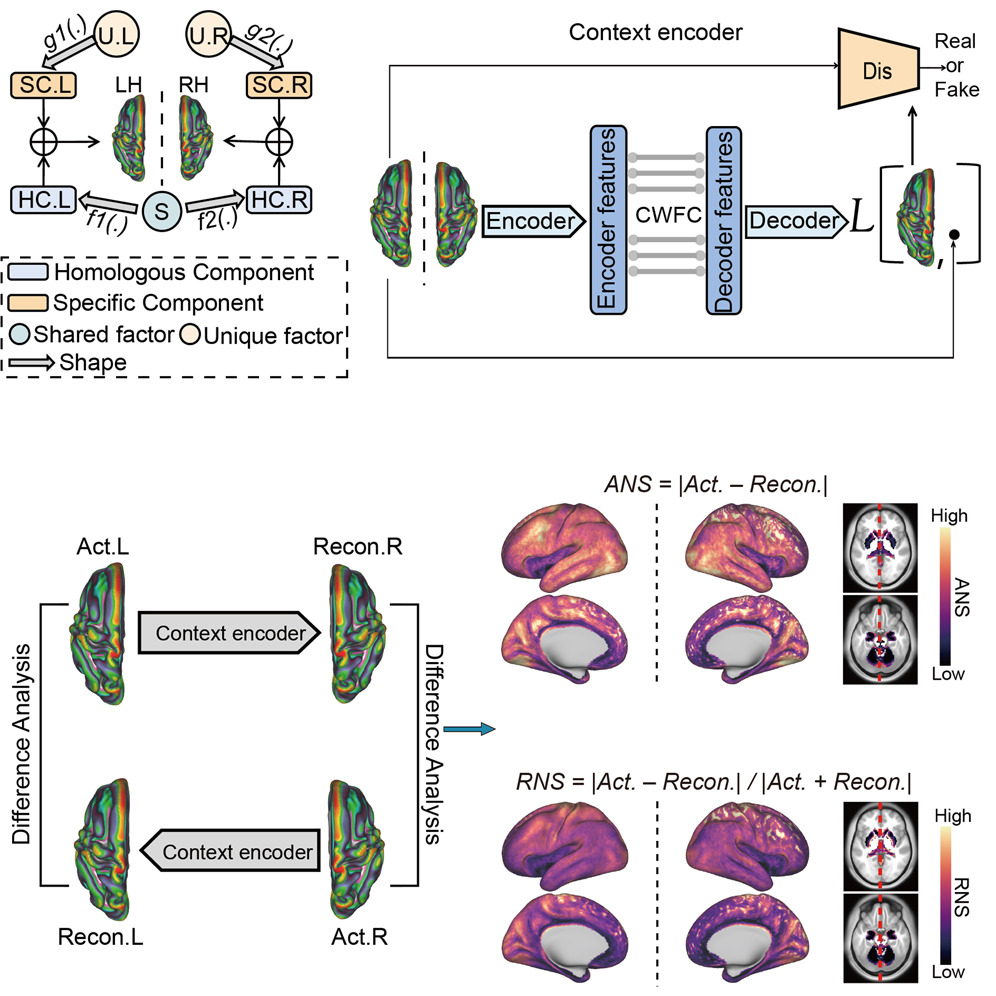
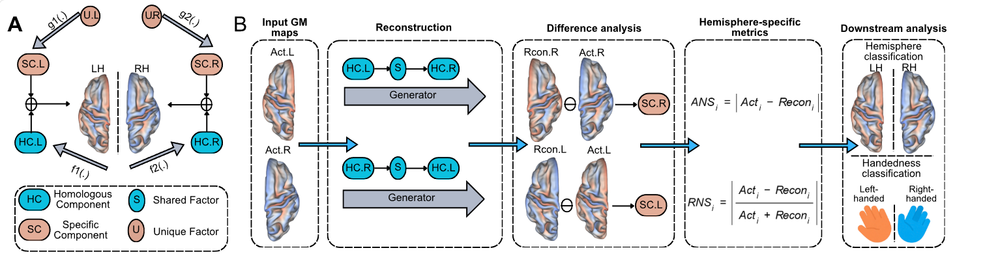

半球特异性神经影像工具包
HemiSpec
HemiSpec 是一个科研软件工具包，将预处理后的灰质图转换为双侧重建衍生的半球指标：ANS（absolute neuroanatomical specificity，绝对神经解剖特异性）与 RNS（relative neuroanatomical specificity，相对神经解剖特异性）。
由 阿瞒的脑洞 · A MAN'S BRAINHOLE 出品
非对称指标
|Acti − Reconi|
|(Acti − Reconi) / (Acti + Reconi)|
Wang et al. 2024, Patterns 5:100930
输入边界
HemiSpec 的 DGN 不能直接接收原始 T1 加权 MRI。每个 T1 图像必须先通过文档中的 FSL 预处理流程，转换为 MNI152 1.5 mm 空间的掩膜灰质图（*_GM_masked.nii.gz）。
端到端工作流
准备输入
T1w NIfTI → FSL BET、FAST、MNI 仿射配准、灰质阈值与掩膜 → 掩膜灰质图。
双向重建
随包提供的双侧 DGN 在同一预处理灰质网格上执行左到右与右到左推理。
计算 ANS 与 RNS
逐体素比较得到 ANS 与 RNS；两个方向合并为目标半球的双侧指标图。
汇总或验证
可选地使用兼容 atlas 聚合、运行半球分类器验证，或估计重测信度。
ANS 与 RNS 是非负的重建误差衍生指标，既不是以毫米计量的距离，也不是神经元功能、因果偏侧化或组织病理的直接测量。原始定义来自 Wang 等人（2024）；精确的软件实现解释见 ANS/RNS 指标。
方法一览




| 阶段 | 输入 | 主要处理 | 输出 |
|---|---|---|---|
| 预处理 | T1 加权 NIfTI | FSL 去颅骨、组织分割、MNI 仿射配准、GM 阈值与掩膜 | *_GM_masked.nii.gz |
| 重建 | 预处理 GM 图 | 左到右与右到左 DGN 推理 | 目标半球重建图 |
| 指标计算 | 实际 GM 与重建 GM | ANS/RNS 残差指标 | ANS.L、ANS.R、RNS.L、RNS.R |
| 可选汇总 | 体素图 + 兼容 atlas | ROI 聚合 | ROI 长表与宽表 |
| 可选验证 | 图或 ROI 特征 | 半球分类和/或 TRT 分析 | 验证表格与图 |
原始方法与 HemiSpec 新增
- 跨半球 DGN 重建框架
- ANS 与 RNS 定义
- 已发表科学证据与术语
- 可安装的 API、CLI 与 GUI 工作流
- 模型资产发现与双侧图导出
- ROI 汇总、验证工具、文档与发布流程
选择使用路径
快速开始
安装源码检出，检查模型就绪状态，运行 GUI 或双向 CLI。
方法
阅读重建框架、指标定义与具体实现细节。
数据与模型
了解 DGN 检查点、分类器包和可选 ROI atlas 的定位方式。
如何引用
使用 HemiSpec 时，请引用原始框架并记录软件发布版本。
Wang, G., Jiang, N., Ma, Y., Suo, D., Liu, T., Funahashi, S., & Yan, T. (2024). Using a deep generation network reveals neuroanatomical specificity in hemispheres. Patterns, 5(4), 100930.
论文 DOI：10.1016/j.patter.2024.100930 · Zenodo 记录：10.5281/zenodo.10466961
软件与下游研究引用见引用页面。
当前范围
当前支持
- 体素级 ANS 与 RNS 图
- 具有输入网格兼容 atlas 时的可选 ROI 表
- 使用兼容 Glasser atlas 与标签的可选半球分类器验证
- 可选重测信度
- 源码检出安装；PyPI 项目尚未公开
不在范围
- 将原始 T1 加权图像直接作为 DGN 输入
- 将行为表型建模作为内置命令
- 对合成 quickstart 输出作解剖学解释
- 未发表的研究结果
文档对应版本。本站记录当前 main 源码检出；归档 v0.1.0 发行包早于本站部分命令。
运行。每次运行应使用新的或空的输出目录。GUI 在输出工作区已有内容时会拒绝启动；在命令行中，hemispec quickstart 遇到非空 --out-dir 时会拒绝运行，除非传入 --force（该选项会删除并重新生成该目录）；hemispec workflow 与各单步命令不做此检查，请自行选择新文件夹。
HemiSpec · 由 阿瞒的脑洞 · A MAN'S BRAINHOLE 出品 · 源码：github.com/mqqq333/HemiSpec · 文档基于 Material for MkDocs 构建。